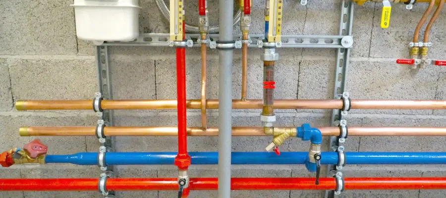
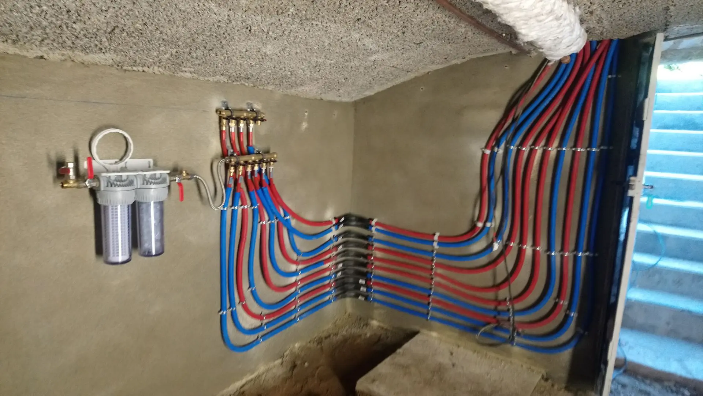

Société de Assainissement Casablanca
Notre société d’assainissement œuvrent dans la mise en place et l’entretien des systèmes individuels de collecte et de gestion de déchets, mais aussi du raccordement au tout-à-l’égout. Elle travaille dans tout ce qui est canalisation, micro-station d’épuration et fosse toutes eaux. WINBEST PLOMBERIE est au service des particuliers, collectivités, Professionnels du BTP ainsi que les industriels. Dotée d'une équipe de 45 intervenants, nos experts sont à votre service et vous proposeront la solution la plus adéquate.
Société d'Assainissement Maroc
Pour effectuer travaux et urgences en assainissement sur Casablanca et partout au Maroc nous sommes joignables 24/24 du lundi au dimanche. Notre rapidité est due à notre expérience et au système de géolocalisation géré par notre antenne administrative qui vous enverra, le véhicule le plus proche de chez vous dans les meilleurs délais.
La maîtrise de la gestion des eaux usées a été l’une des clés qui ont permis la création des premières grandes agglomérations. Il fallait en effet trouver des moyens pour collecter, évacuer voire traiter les déchets solides et surtout liquides des habitations.
L’assainissement regroupe toutes les techniques utilisées pour gérer les eaux usées (eaux de pluie, eaux provenant de la cuisine et de la salle de bain, excréments) et les ordures aussi bien ménagères qu’industrielles et agricoles. Le but est de débiter tous les désagréments que peut entrainer l’accumulation des déchets.
Ce domaine est très encadré par la loi, car les enjeux sont à la fois sanitaires et environnementaux. Si les eaux usées ne sont pas évacuées correctement, cela augmente les risques de maladies comme la diarrhée, la typhoïde et le choléra, sans parler de la prolifération des insectes tout aussi vecteurs de maladie. Sinon, les infiltrations dans la terre peuvent contaminer les sols et les nappes phréatiques.
Société d'Assainissement Maroc
Le déplacement à la demande, d'un commercial pour conseil et chiffrage d'une prestation
L'enregistrement des données nécessaires à la réalisation d'une prestation : types de véhicules (poids lourds, surbaissés, légers, ...), horaires de passage, observations particulières
La prise en charge des cas d'urgences avec optimisation des délais
La mise en place d'une permanence pour les demandes en soirées et du week-end afin d'assurer un service 24/24 et 7/7
Le suivi assidu en temps réel des travaux grâce à la planification informatique
La gestion de contrôle interne inopiné sur site pour vérification de la qualité d'exécution du travail
La notification par nos techniciens et d'éventuelles anomalies constatées sur le site, avec obligation d'en informer le client
La prise en charge des déchets par des organismes agréés.